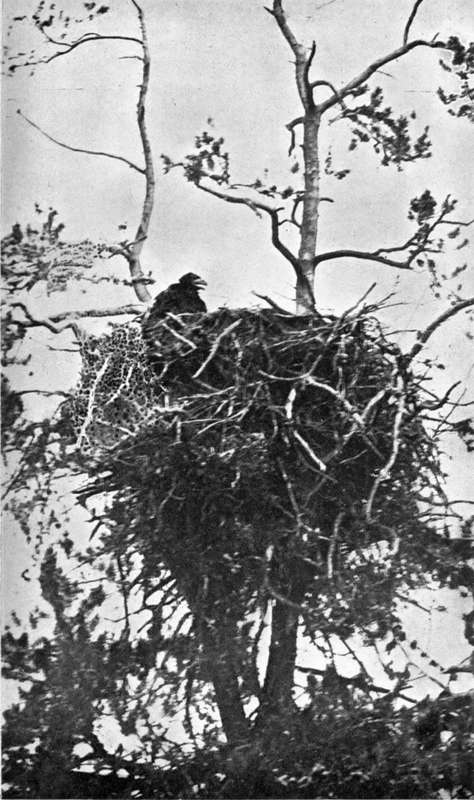

On The Great Churchill River. Part 4
Description
This section is from the book "Wild Life In Canada", by Angus Buchanan. Also available from Amazon: Wild Life in Canada.
On The Great Churchill River. Part 4
It commenced to rain after midday and we got miserably wet before evening. During the day the following birds were observed: Leconte Sparrow, Swamp Sparrow, Yellow-bellied Flycatcher, Yellow Warbler, Tree Swallow, Red-winged Blackbird, Belted Kingfisher, Snipe, Bittern, Mallard, Shoveller, Golden-eye, Blue-winged Teal, Holboell Grebe, Black Tern, Crow, Raven, Osprey.
A Bald Eagle's Eyrie
June 7 (Sunday)
Awoke this morning after a miserable night passed on water-soaked ground in damp blankets. The activities of the mosquitoes on the 5th were sure forecast of rain, and so rain had come. It rained all day, and we did not attempt to move on but sat tight within the shelter of my small silk tent. I skinned the specimens I had collected yesterday, while Joe did his best to nurse a spluttering fire before the tent-door for the cooking of meals. Rain can be a most disconcerting element when canoeing and camping-out in this fashion, far from any settlement ; a steady downpour will very soon find a way into every conceivable corner, no matter how well you have fancied you have taken precautions against it, and the result is that before long you sit among your far-carried, dearly valued possessions and see them in a state of half ruin before your eyes. Then only sunshine can lift your depression, and, in spite of your unpleasant experience, when Old Sol breaks through again you find yourself gaily arranging your possessions before its heat, and looking out on the world with a freshened optimism. Rain was, however, by no means a constant tyrant, for we experienced a beautiful summer of sunshine with days of rain a rare exception.
June 8
Morning overcast after a night of heavy rain, but the heavy clouds cleared about 10 a.m. and the day thenceforward was bright and pleasant; the air crystal-clear as the sparkling water, the whole North world pure with the intense cleanness of virginity.
To-day we passed down the rapidless stretch of river between Knee Lake and Sandy Lake : a stretch sub-named Grassy River on account of the waterway for some distance wending its way, in three separate channels, through broad green marsh. The chief incident of the day was the finding of a colony of nesting terns on a low, plant-barren, wave-washed island, full note of which is given in the subsequent chapter of " Field Notes." While on the island, some time was spent photographing nests, and, thus delayed, we were still short of Sandy Lake when night approached and necessitated our pitching camp on the river bank.
June 9
We breakfasted in rain, and struck camp, to continue our canoe journey under the same discomforting conditions. An hour after leaving camp we emerged into Sandy Lake, and throughout the day voyaged through it. Sandy Lake bore out its name, containing many low broad points and bays of beautiful sand. Indeed, so clean and white were the shores in many places that the lake was thereby of pleasing fresh aspect in comparison with those already navigated. Here, too, and on account of the composition of the beach, shore birds were found more numerously than anywhere previously, and I collected ten specimens; among them a pair of Sabine's Gulls, of which I saw three. These are noteworthy, for they were the only specimens of this species encountered throughout the expedition, and possibly they are quite rare in this inland territory. Further west, some two hundred and fifty miles, Ernest Thompson Seton and Edward A. Preble made an expedition in 1907 down the Athabasca River and adjacent waterways, and in their list of birds observed do not record having seen a single specimen.1
Late in the afternoon, close to an island in the north-east corner of Sandy Lake, we came on a small settlement containing fourteen inhabitants. Here (in the rude, unkept clothing of an outdoor exile), we found a white trapper, by name Hans Madson-a Danish-American married to an English-Cree halfbreed woman. Not an old man, this ruddy haired Dane of perhaps five-and-thirty, yet were the customs of his race well-nigh erased and his disposition imbued with the habits and mannerisms of his redskin associates : only in colouring and speech did trace of his origin remain; so far had he grown into the likeness of his surroundings. His cabin was empty of every luxury of food, and his eyes lit hungrily when opportunity was given him to receive a portion of sugar and prunes in exchange for dried moose meat; for his daily food was little more than dried meat, and fresh or dried fish, cooked without seasoning and eaten without vegetable or bread of any kind. He was undisguisedly delighted to see us, and told us we were the only whites he had seen since the Fall of the previous year, when he had been out to Prince Albert. He begged us to camp the night near him, and this we did, sharing with him as real a European meal as scant stores could furnish, much to his satisfaction and gratitude.
1 The Arctic Prairies, by E. Thompson Seton.
The boom in black fox farming was at its height in 1913 and 1914, and every good fox that could be trapped alive in the wilderness was being caged and sent east to Prince Edward Island for breeding purposes. Like every other white trapper in the Dominion of Canada, Hans Madson was " fox crazy " : smitten with the mad desire for great riches, as men are swept off a sane balance who join in a great gold rush. He was obsessed with the thought of digging out dens of priceless black and silver cubs, or the offspring of black or cross parents. Now, however, the cub season was over, and his chance of success, for the time, was gone. He had had no great luck-a few reds and cross foxes he had taken-but, undaunted, still he talked of the rare animals he had seen on frozen lakes and in snowed-up forest, and of others his Indian friends had reported; and he dreamed with true optimistic sporting keenness of the possibilities of success when the next early spring should approach.
Continue to:
- prev: On The Great Churchill River. Part 3
- Table of Contents
- next: On The Great Churchill River. Part 5